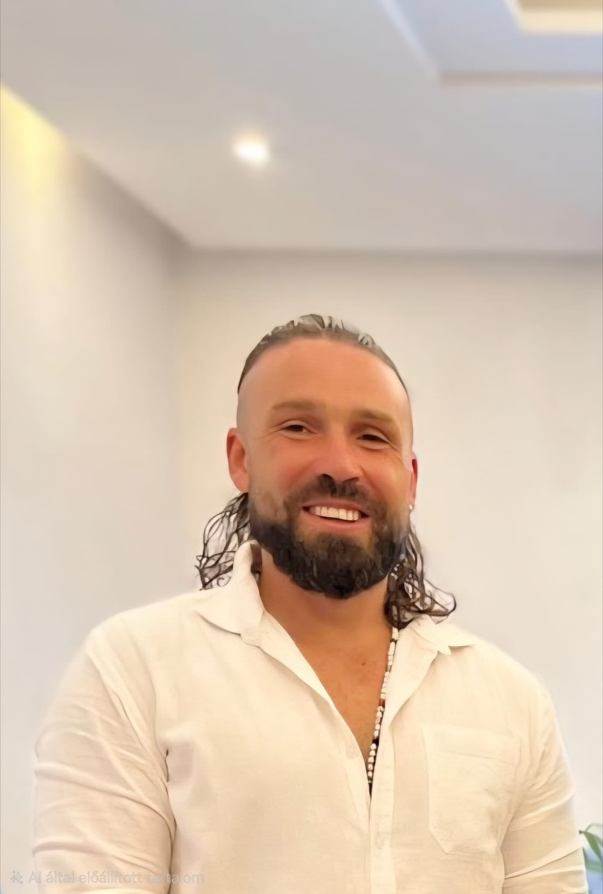

Geboren in Ungarn. Zu Hause da, wo ich gerade bin. Was mich überallhin begleitet, sind meine Hände und meine Kamera.

Mustertext. Diese Geschichte ist ein Platzhalter, damit du ein Gefühl für Ton und Länge bekommst. Erzähl mir deine echte Geschichte — dann wird daraus dein Text.
Ich bin in Ungarn aufgewachsen, in einer Gegend, in der man früh lernt, mit dem zu arbeiten, was da ist. Schon als Junge hat mich beides angezogen: anderen mit meinen Händen gutzutun und festzuhalten, was schön ist. Lange wusste ich nicht, dass aus diesen zwei Dingen einmal mein Leben werden würde.
Irgendwann wurde mir die Welt zu klein, um an einem Ort zu bleiben. Ich bin losgezogen — nicht als Flucht, sondern aus Neugier. In Sri Lanka habe ich die ayurvedische Massage kennengelernt und gemerkt: Das ist es. Ich bin geblieben, habe gelernt, ausgebildet, und eine Tradition in mich aufgenommen, die viel älter ist als alles, was ich vorher kannte. Heute ist die ayurvedische Massage mein Herzstück. Lomi Lomi und Thai-Massage gehören dazu, aber Ayurveda ist meine Sprache.
Auf meinen Reisen ist immer eine zweite Leidenschaft mitgewachsen: das Sehen aus einer anderen Perspektive. Mit der Drohne entdecke ich Orte neu — von oben, weit, ruhig. Aus den Aufnahmen schneide ich kleine Filme, die zeigen, was ein Ort kann. Was als Hobby begann, ist heute etwas, das ich für Menschen tue, die ihren Ort sichtbar machen wollen: Ferienwohnungen, Hotels, kleine Paradiese am Rand der Karte.
Ich bin kein digitaler Nomade, kein Aussteiger mit einer Botschaft. Ich bin einfach gern unterwegs — und nehme das, was ich kann, überallhin mit. Mal lege ich für ein paar Wochen die Hände an, mal lasse ich die Drohne steigen. Wenn du wissen willst, wo ich gerade bin, findest du das auf Instagram. Und wenn unsere Wege sich kreuzen: Schreib mir.